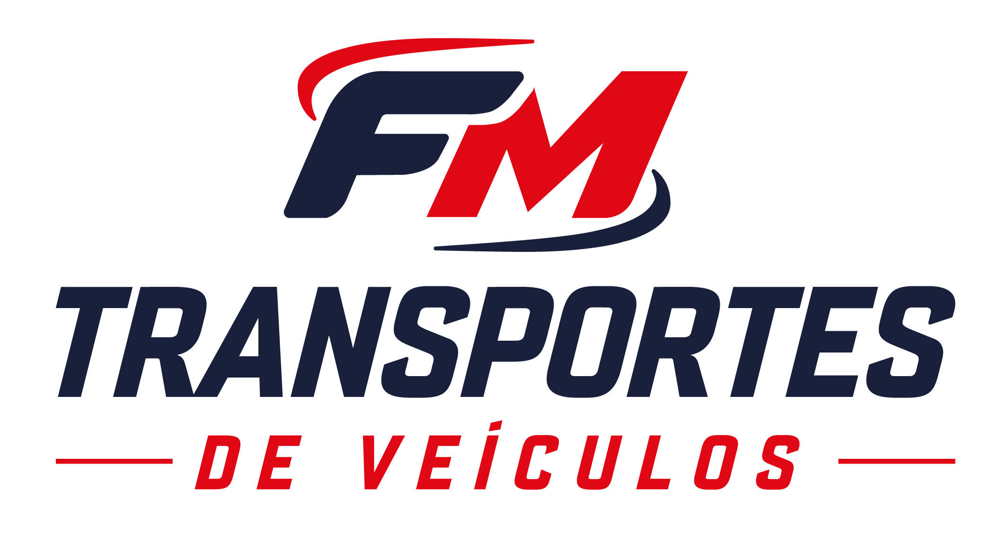

CASE 01FM Transportes
"Quando a marca precisa parecer tão robusta quanto a operação."
Antes · arquivo

Depois◂▸
Arraste para comparar
Contexto
Emblema oval com swooshes em gradiente e serif condensada — estética de outra década para uma operação em expansão.
Por que mudou
Monograma FM em navy e vermelho, tipografia display industrial e o swoosh disciplinado em elemento de velocidade.
Aprendizado para a GOIASPEL
Empresas industriais precisam transmitir confiança antes da negociação.